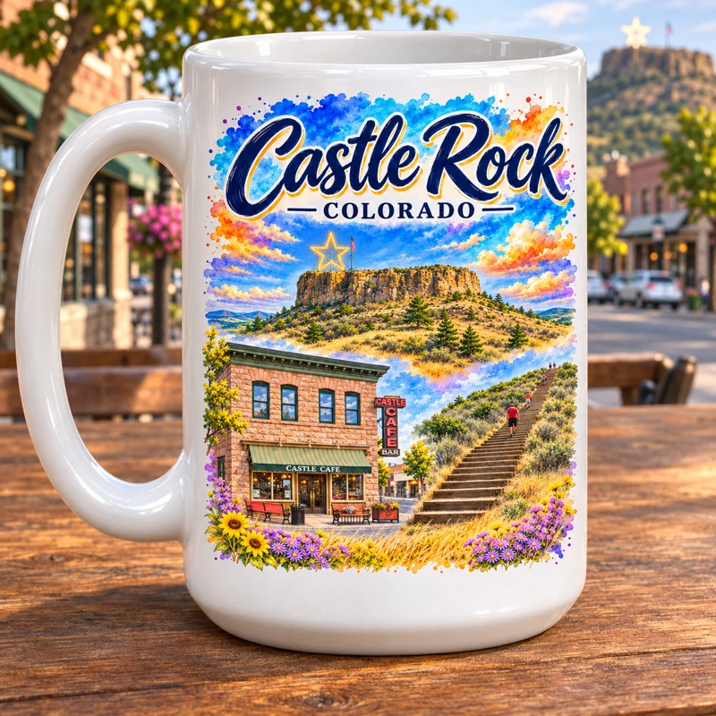
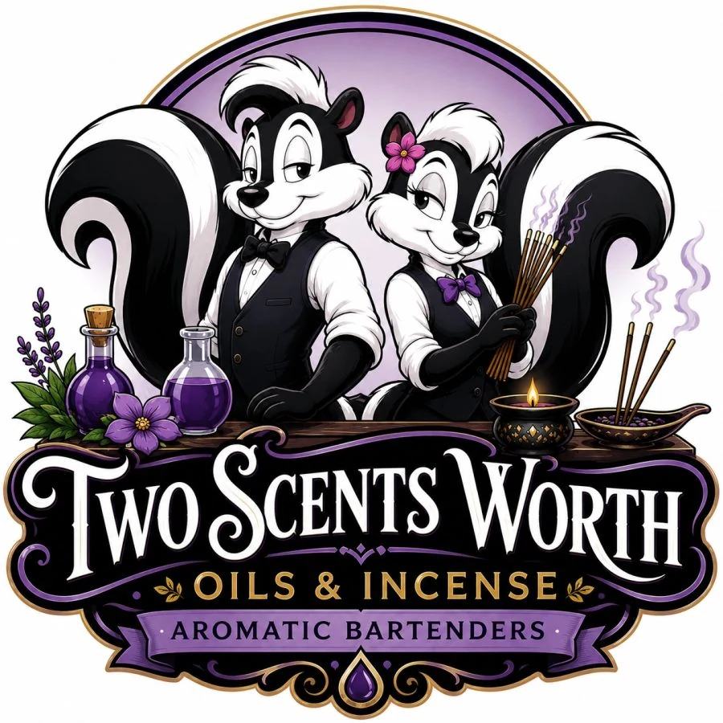

The Rock and the Star
The Star was constructed in 1936 and remains a defining symbol of the town.
Learn MoreA star-topped landmark, historic downtown and outdoor adventures in Colorado’s butte country.
Castle Rock took shape in 1874 and became the Douglas County seat. Its namesake butte, rhyolite-quarrying history and historic downtown give the community a distinctive identity. The Star atop the Rock has been a town tradition since 1936.
Historic downtown, Castle Rock’s namesake formation topped by its star, and the outdoor staircase at Challenge Hill come together in a watercolor travel-poster collage. These landmarks stand in different locations around town.
Collect the places you’ve been. Discover the places you’ll go next.

$13.99 + shipping
15 oz glossy white ceramic · Comfortable C-handle · Microwave- and dishwasher-safe.
Shop NowLead- and BPA-free. Clean in the dishwasher or wash by hand with warm water and dish soap. Shipping options are shown at checkout.
The Star was constructed in 1936 and remains a defining symbol of the town.
Learn MoreRailroad connections and local rhyolite shaped Castle Rock’s early economy and historic town center.
Learn MoreThe outdoor staircase at Philip S. Miller Park has 200 steps climbing 178 feet. It is a separate location from the namesake Rock.
Learn MoreCastle Rock took shape in 1874 when Jeremiah Gould donated land for the townsite. Named for the prominent butte above the settlement, it became the Douglas County seat. Rhyolite quarrying and railroad transportation helped build its economy, while the preserved depot recalls the connection between local stone, commerce and regional travel.

Hand-dipped incense, oils and decorative bottle burners from a Castle Rock business with a playful approach to fragrance.
Read the Business Story & View Photos →